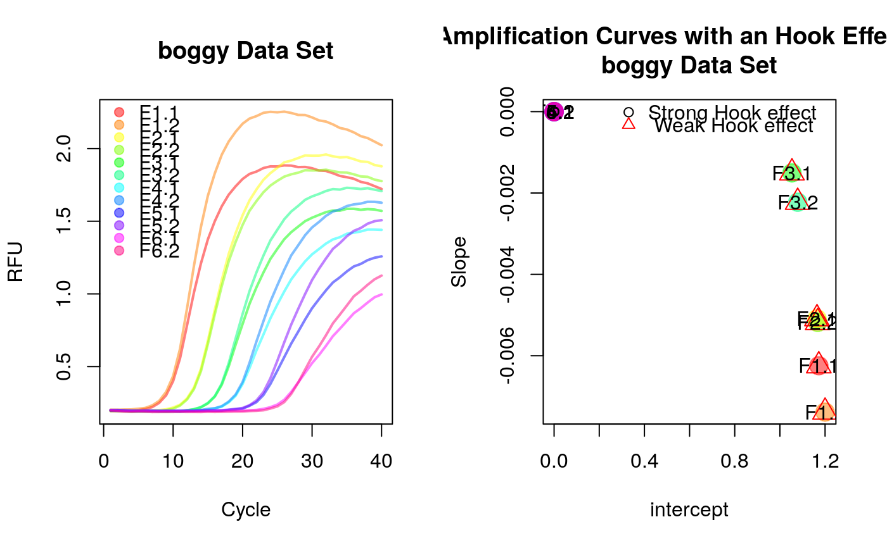

hookreg.Rdhookreg is a function to calculate the slope and intercept of an
amplification curve data from a quantitative PCR experiment. The idea is that
a strong negative slope at the end of an amplification curve is indicative for
a hook effect (see Barratt and Mackay 2002).
hookreg(x, y, normalize = TRUE, sig.level = 0.0025, CI.level = 0.9975, robust = FALSE)
| x | is the cycle numbers (x-axis). |
|---|---|
| y | is the cycle dependent fluorescence amplitude (y-axis). |
| normalize | is a logical parameter indicating if the data should be normalized to the 0.999 quantile |
| sig.level | defines the significance level to test for a significant regression |
| CI.level | confidence level required for the slope |
| robust | is a logical parameter indicating if the data should be
analyzed be a robust linear regression ( |
K. Barratt, J.F. Mackay, Improving Real-Time PCR Genotyping Assays by Asymmetric Amplification, J. Clin. Microbiol. 40 (2002) 1571--1572. doi:10.1128/JCM.40.4.1571-1572.2002.
# Calculate slope and intercept on noise (negative) amplification curve data # for the last eight cycles. library(qpcR) library(magrittr) res_hook <- sapply(2:ncol(boggy), function(i) { hookreg(x=boggy[, 1], y=boggy[, i])}) %>% t %>% data.frame(sample=colnames(boggy)[-1],.) res_hook#> sample intercept slope hook.start hook.delta p.value #> 1 F1.1 1.172270 -0.006245585 26 15 5.036934e-11 #> 2 F1.2 1.200001 -0.007383676 26 15 1.002592e-12 #> 3 F2.1 1.164265 -0.005088431 32 9 3.832008e-06 #> 4 F2.2 1.167357 -0.005181812 32 9 7.647282e-07 #> 5 F3.1 1.053409 -0.001504617 35 6 5.438867e-02 #> 6 F3.2 1.078725 -0.002225900 35 6 2.157723e-02 #> 7 F4.1 0.000000 0.000000000 0 0 NA #> 8 F4.2 0.000000 0.000000000 0 0 NA #> 9 F5.1 0.000000 0.000000000 0 0 NA #> 10 F5.2 0.000000 0.000000000 0 0 NA #> 11 F6.1 0.000000 0.000000000 0 0 NA #> 12 F6.2 0.000000 0.000000000 0 0 NA #> CI.low CI.up hook.fit hook.CI hook #> 1 -0.007438201 -0.005052969 1 1 1 #> 2 -0.008419439 -0.006347914 1 1 1 #> 3 -0.006895532 -0.003281330 1 1 1 #> 4 -0.006633731 -0.003729894 1 1 1 #> 5 -0.005278075 0.002268842 0 0 0 #> 6 -0.006335882 0.001884081 0 0 0 #> 7 NA NA 0 0 0 #> 8 NA NA 0 0 0 #> 9 NA NA 0 0 0 #> 10 NA NA 0 0 0 #> 11 NA NA 0 0 0 #> 12 NA NA 0 0 0data_colors <- rainbow(ncol(boggy[, -1]), alpha=0.5) cl <- kmeans(na.omit(res_hook[, 2:3]), 2)$cluster par(mfrow=c(1,2)) matplot(x=boggy[, 1], y=boggy[, -1], xlab="Cycle", ylab="RFU", main="boggy Data Set", type="l", lty=1, lwd=2, col=data_colors) legend("topleft", as.character(res_hook$sample), pch=19, col=data_colors, bty="n") plot(res_hook$intercept, res_hook$slope, pch=19, cex=2, col=data_colors, xlab="intercept", ylab="Slope", main="Clusters of Amplification Curves with an Hook Effect-like Curvature\nboggy Data Set")points(res_hook$intercept, res_hook$slope, col=cl, pch=cl, cex=cl)legend("topright", c("Strong Hook effect", " Weak Hook effect"), pch=c(1,2), col=c(1,2), bty="n")text(res_hook$intercept, res_hook$slope, res_hook$sample)